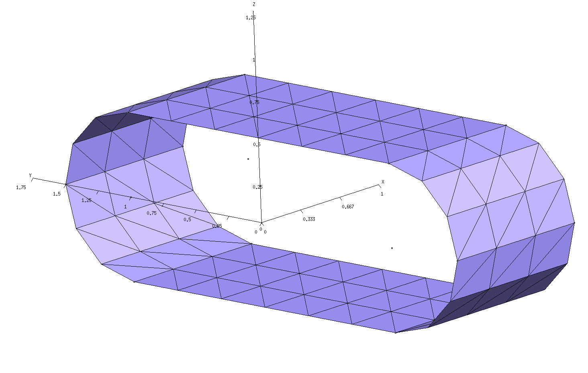
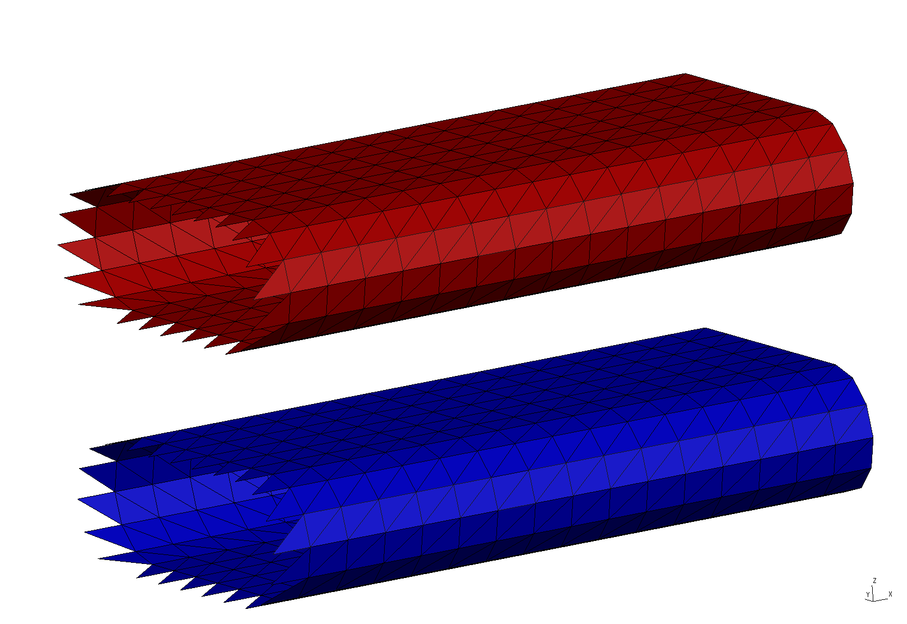
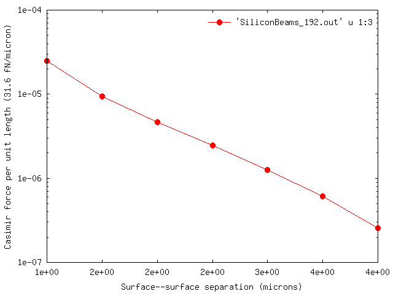

Casimir forces between infinitely extended silicon beams (1D periodicity)
In this example, we exploit scuff-em's
support for 1D periodic geometries
to compute the equilibrium Casimir force per unit length
between infinitely extended silicon beams of
rounded rectangular cross section.
The files for this example may be found in the
share/scuff-em/examples/SiliconBeams subdirectory
of your scuff-em installation.
gmsh geometry file for unit-cell geometry
The gmsh geometry file
RoundedBeamUnitCell.geo
describes the portion of the surface of a single
beam that lies within the unit cell,
i.e. the cell that is infinitely periodically
replicated to yield the full geometry.
To produce a discretized surface-mesh
representation of this geometry, we run it through
gmsh:
% gmsh -2 RoundedBeamUnitCell.geo
This produces the file RoundedBeamUnitCell.msh, which
I rename to RoundedBeamUnitCell_192.msh because 192
is the number of interior edges (this information may be
found, for example, by running
scuff-analyze --mesh RoundedBeamUnitCell.msh).
You can open the .msh file in gmsh to visualize
the unit-cell mesh:
% gmsh RoundedBeamUnitCell_192.msh

Note the following:
-
For 1D periodic geometries in scuff-em, the direction of infinite extent must be the x direction.
-
Only the sidewall of the cylinder is meshed; the endcaps must not be meshed.
-
For surfaces that straddle the unit-cell boundaries (as is the case here), each triangle edge that lies on the unit-cell boundary must have an identical image edge on the opposite side of the unit cell. An easy way to achieve this is to use extrusions in gmsh, as in the
.geofile above. -
In this case the unit cell is 1 m long. (More generally, the unit cell could have any length you like.)
scuff-em geometry file
The scuff-em
geometry file
describing our two infinite-length silicon beams is
SiliconBeams_192.scuffgeo.
This specifies a geometry consisting of two identical
silicon beams, of infinite extent in the x direction,
separated by a distance of 2 m in the direction.
The infinite beams consist of the finite-length unit-cell
geometry, periodically replicated infinitely many times.
(The length of the lattice vector specified by the LATTICE
statement should agree with the length of the unit cell as
defined in the gmsh geometry file.)
LATTICE
VECTOR 1.0 0.0
ENDLATTICE
MATERIAL SILICON
epsf = 1.035; # \epsilon_infinity
eps0 = 11.87; # \epsilon_0
wp = 6.6e15; # \plasmon frequency
Eps(w) = epsf + (eps0-epsf)/(1-(w/wp)^2);
ENDMATERIAL
OBJECT Beam1
MESHFILE RoundedBeamUnitCell_192.msh
MATERIAL Silicon
ENDOBJECT
OBJECT Beam2
MESHFILE RoundedBeamUnitCell_192.msh
MATERIAL Silicon
DISPLACED 0 0 2
ENDOBJECT
We can use scuff-analyze to visualize the geometry
described by this .scuffgeo file:
% scuff-analyze --geometry SiliconBeams_192.scuffgeo --WriteGMSHFiles --Neighbors 2
[The option --Neighbors 2 requests that, in addition to the unit-cell
geometry, the first 2 periodic images of the unit cell in both the
positive and negative directions (for a total of 5 copies of the
unit cell) be plotted as well. This helps to convey a slightly
better sense of the actual infinite-length structure being
simulated.] This produces the file SiliconBeams_192.pp, which you
can view in gmsh:
% gmsh SiliconBeams_192.pp

Note that the visualization file produced by scuff-analyze includes extra triangles (visible at the left end of the structure) that are not present in the unit-cell geometry. These are called straddlers, and they are added automatically by scuff-em to account for surface currents that flow across the unit-cell boundaries in periodic geometries.
scuff-em transformation file
In Casimir problems we typically want to compute
forces (or torques, or energies) at multiple
values of the surface--surface separation.
This is done by writing a
transformation file.
In this case we'll request the Casimir force between
the beams for 9 distinct values of the surface-surface
separation ranging between 1-5m.
The file that specifies this is called
Beams.trans:
TRANS 1.00 OBJECT Beam2 DISP 0 0 0.00 TRANS 1.50 OBJECT Beam2 DISP 0 0 0.50 TRANS 2.00 OBJECT Beam2 DISP 0 0 1.00 TRANS 2.50 OBJECT Beam2 DISP 0 0 1.50 TRANS 3.00 OBJECT Beam2 DISP 0 0 2.00 TRANS 3.50 OBJECT Beam2 DISP 0 0 2.50 TRANS 4.00 OBJECT Beam2 DISP 0 0 3.00 TRANS 4.50 OBJECT Beam2 DISP 0 0 3.50 TRANS 5.00 OBJECT Beam2 DISP 0 0 4.00
For full details on scuff-em transformation files, see this reference page. For the time being, note the following:
-
The text
TRANS 4.00specifies the string4.00as the name of this transformation. This is the string that will be written to output files to identify the Casimir quantities corresponding to each geometrical transformation. This can be any string not including spaces (in particular, it need not be a number), but it's usually convenient to label transformations by numbers so that we can subsequently plot e.g. force vs. distance. -
The text
OBJECT Beam2 DISP 0 0 3.00specifies that, in this particular geometrical transformation, the object labeledBeam2in the.scuffgeofile is to be displaced 3 m in the z direction. -
Why do we assign the label
4.00to a transformation in which the displacement is 3 m? Because transformations are relative to the configuration described in the.scuffgeofile, and in the.scuffgeofile discussed above the second beam is already displaced a distance of 2 m from the first beam, which means the default surface-surface separation is 1 m. Applying an addition 3 m displacement then yields a surface-surface separation of 4 m.
You can use scuff-analyze to obtain a visualization of what your geometry looks like under each transformation:
% scuff-analyze --geometry SiliconBeams_192.scuffgeo --TransFile Beams.trans
This produces a file named SiliconBeams_192.transformed.pp, which
you can open in gmsh to confirm that the transformations you
got are the ones you wanted.
A first trial run of scuff-cas3d at a single frequency
To compute the full Casimir force per unit length
between the beams (call this quantity ),
scuff-cas3d numerically evaluates an
integral over both imaginary frequencies and Bloch
wavenumbers :
where the integral is over the Brillouin zone (BZ)
and is the one-dimensional volume
of the BZ. For a 1D periodic geometry, the Brillouin
zone is the 1D interval ,
and its one-dimensional volume (its length) is ,
where m is the length of the real-space unit cell.
,
Because the full calculation can be somewhat time-consuming,
it's often useful to run a quick single-frequency
calculation just to make sure things are making sense
before launching the full run. We do this by
specifying the --Xi command-line option to
scuff-cas3d, which requests a calculation
of just the quantity in the above
equation at a single imaginary frequency .
(Note that, for our 1D periodic geometry,
this single-frequency calculation still entails a
wavenumber integration over the 1D Brillouin zone.)
% scuff-cas3d --geometry SiliconBeams_192.scuffgeo --TransFile Beams.trans --zforce --xi 0.7
This produces (among other files) files called
SiliconBeams_192.byXi
and
SiliconBeams_192.byXikBloch.
The former file reports values of the quantity ,
at the requested value of , for each of the
transformations in the .trans file. The latter
file gives more granular information: it reports
values of the quantity at the requested
value of and at each point sampled by
the built-in numerical integrator.
The file SiliconBeams_192.byXi looks like this:
# scuff-cas3D run on superhr1 at 06/07/15::01:01:38 # data file columns: #1: transform tag #2: imaginary angular frequency #3: z-force Xi integrand #4: z-force error due to numerical Brillouin-zone integration 1.00 7.000000e-01 1.53365587e-02 1.10343992e-05 1.50 7.000000e-01 3.27174955e-03 6.54894735e-06 ... 5.00 7.000000e-01 2.84878401e-06 4.63609357e-08
As the file header says, the first column here is the transform tag (the surface--surface separation), the second column is the imaginary angular frequency in units of rad/sec, and the third column is the Casimir force per unit length per unit frequency (in units of ) where and where =femtoNewtons.
The full run
Now just launch the full run:
% scuff-cas3d --geometry SiliconBeams_192.scuffgeo --TransFile Beams.trans --zforce
(This is the same command line as before, just without the
--Xi option.)
After some computation, this produces the output file
SiliconBeams_192.out. You can plot the force (per unit length)
versus surface--surface separation using e.g. gnuplot:
% gnuplot gnuplot> set xlabel 'Surface--surface separation (microns)' gnuplot> set ylabel 'Casimir force per unit length (31.6 fN/micron)' gnuplot> set logscale y gnuplot> plot 'SiliconBeams_192.out' u 1:3 w lp pt 7 ps 1.5
